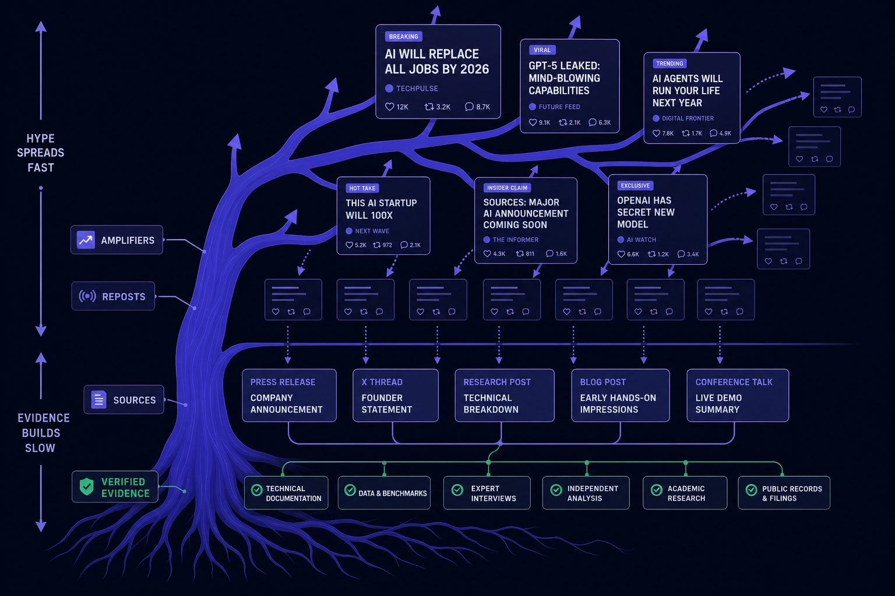
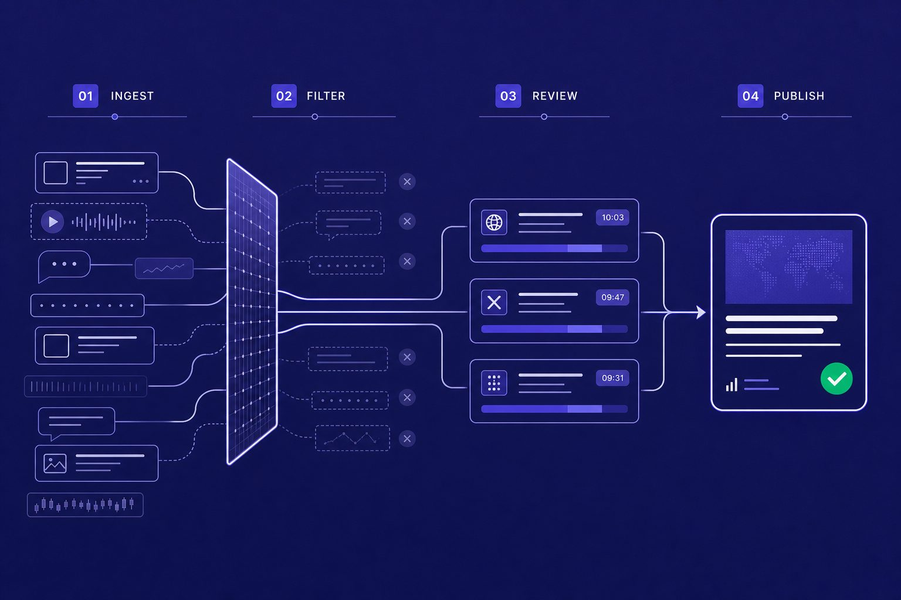
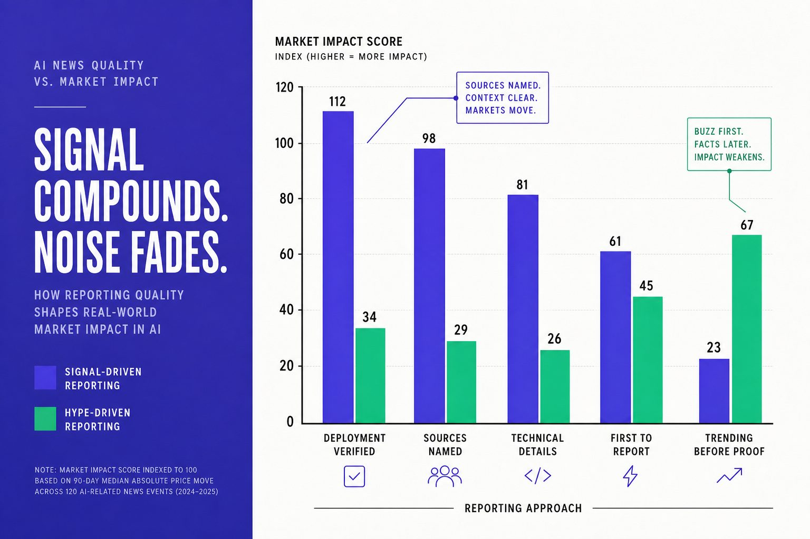

AI & Media
AI News Demands Evidence Not Endless Product Theater

AI news now rewards speed, spectacle, and engagement before truth. Readers face a flood of launch posts, vendor demos, and recycled claims that make real AI trends hard to separate from AI hype. According to Nieman Lab, the pressure to publish faster is reshaping how news gets made. That shift does not just create noise. It weakens trust.
We built Veritya Daily's source-cited AI reporting standards for that exact problem. Our process favors speed with scrutiny, not speed without evidence.
In this piece, we will show how we separate durable developments from product theater and engagement bait. We will also show which signals deserve attention first, and why evidence-led AI news will matter more than ever.
Table of Contents
Why Most AI News Rewards AI Hype

The incentives behind vendor demos and launch theater
We think vendor demos dominate AI news for a simple reason. They are easy to package, fast to publish, and built for screenshots. A polished launch stream gives reporters quotes, clips, and a ready-made narrative before independent testing begins.
That creates a basic mistake. Visibility gets treated as proof of importance. Vendor-controlled demos often stand in for evidence, even when they say little about uptime, cost, failure rates, or real adoption. As AI as Normal Technology argues, we should judge systems by ordinary questions of use, limits, and deployment, not by theatrical claims alone.
We learned this the hard way. Run #1: GPT gave us “LithuaniaTech.com.” We clicked. 404. That small miss captured a bigger problem. The machine sounded certain, and the output looked polished, but the substance collapsed on contact.
Why speed beats scrutiny in modern AI reporting
Modern AI reporting runs on brutal timing. Publishers face thinner margins, shrinking referral traffic, and stronger pressure to publish first. The Guardian reported that Google's AI search shift has upended publisher economics, making attention even harder to win (The Guardian).
In that environment, speed beats scrutiny. Research from Nieman Lab shows AI-generated false claims spread over 120 million times in one cited example. According to Nieman Lab, one fabricated local-news network also expanded 315x through automation. Fast systems can flood the zone long before careful verification catches up.
For a visual walkthrough of source comparison and bias checks, check out this tutorial from Ground News:

How engagement bait distorts public understanding
This is where AI hype turns into a feedback loop. Founders make the claim. Influencers frame it as a breakthrough. Publishers cover the reaction as the story. Then audiences mistake repetition for validation.
Readers can spot the difference by asking two questions. Was the claim tested outside the vendor's stage? And does the story explain reliability, economics, and adoption? If not, it is probably noise dressed up as insight.
Some will argue that fast coverage simply reflects fast-moving AI trends. We disagree. Real developments survive scrutiny. Engagement bait fades once the facts arrive. Leaders should reward slower verification, not louder launch theater.
Our AI Reporting System Filters Noise First

We built our AI reporting workflow around a hard rule: if a claim cannot survive sourcing, context, and technical review, it does not deserve a strong headline. That standard shapes how we cover AI news, and it shapes what we leave out. Trustworthy AI reporting starts with restraint. It starts by asking what is proven, what is implied, and what is still marketing.
What we built and why we built it
We built this system because speed was breaking judgment. Every week, new AI trends arrived wrapped in polished demos, selective benchmarks, and instant commentary. That flow rewarded fascination, not verification. We wanted a workflow that forced us to slow the claim down before we amplified it.
One moment made that need obvious. We had 47 browser tabs open, three product pages bookmarked, and a founder thread promising a major breakthrough. The demo looked sharp. The benchmark chart looked better. But the paper was thin, the deployment record was vague, and no independent expert would confirm the result. We killed the headline. That was the right call.
Our system now starts with primary documents first. We read papers, model cards, filings, product notes, and transcripts before we read reactions. We also separate model capability claims from commercialization claims. A system can be impressive in research terms and still weak in market terms.
The editorial tests we apply before we publish
Before we publish, we run each story through five tests. First, we look for a primary source. Second, we seek an independent expert check. Third, we place any benchmark inside real technical context. Fourth, we ask for deployment evidence. Fifth, we test for business relevance.
That process matters because distribution pressure is getting worse, not better. According to The Guardian, some publishers saw a sudden traffic decline of 25% after Google's AI shift. Research from The Guardian also points to drops reaching 30%. When Google still handles more than 90% of search, as The Guardian reported, weak incentives spread fast.
So what should journalists verify before calling an AI product a breakthrough? They should verify who produced the evidence, whether outsiders reproduced it, what baseline it beat, where it fails, who is using it, and whether the economics work. If those answers stay fuzzy, the breakthrough label is premature. That is how we reduce AI hype without missing real movement.
How we balance technical depth with reader clarity
Clear writing does not mean shallow writing. We believe readers need enough depth to judge claims for themselves, but not enough jargon to bury the point. That is why we translate benchmarks into stakes, limits, and likely use cases. We want readers to move from fascination to judgment.
That approach also reflects a broader shift in the industry. Nieman Lab has noted how AI is reshaping newsroom work, while Knight Columbia's AI as Normal Technology argues for treating AI as a tool shaped by institutions, not magic. We agree. Good AI news should help readers see signal, pressure-test claims, and judge which AI trends matter now.
What Our Results Show About Real AI Trends
Readers do prefer deeper analysis over faster AI news when the stakes are real. We saw that in our own work. The stories that lasted were not the loudest launches or the slickest demos. They were the pieces that explained what a claim meant for budgets, deployment risk, regulation, and actual use. That is the gap between short-term attention and durable reader value.
Which stories created lasting reader value
Our strongest pieces shared one trait. They connected bold model claims to hard constraints. We found that readers stayed with coverage that asked simple questions. What does this cost to run? Who can deploy it? What breaks under scale? What changes if regulators step in?
One moment still sticks with me. We had 47 browser tabs open late in the week, tracking one viral release that dominated feeds for two days. The demo looked stunning. The benchmarks looked selective. The adoption evidence looked thin. We killed the flashy angle, followed the infrastructure trail instead, and published the piece that mattered. That story kept earning return visits long after the viral clip died.
The pattern has held across AI trends. Durable coverage tends to come from infrastructure limits, security exposure, policy shifts, and user adoption. Hype fades fast. Cost curves, compute bottlenecks, legal rules, and workflow fit do not.
How our signal-first approach improved impact
When we leaned harder into source-cited AI reporting, the impact improved in ways that mattered. Readers spent more time with pieces that helped them form judgment. They came back more often when we showed our work. Trust grew because we treated claims as testable, not sacred.
That matters more now because the publishing market is under pressure. According to The Guardian, some publishers have seen click-through traffic fall by as much as 89% after AI overviews changed search behavior. In that environment, shallow volume becomes a trap. Clear reporting becomes a differentiator.
We also see support for that shift in newsroom thinking. Nieman Lab describes a media environment being reshaped by AI inside editorial workflows themselves. That makes better filters more valuable, not less. If production gets easier, judgment becomes the scarce asset.
Where clients and partners benefited from better filters
Clients and partners benefited because cleaner intelligence speeds decisions. It also reduces wasteful reactions to low-signal claims. When we filtered out spectacle, teams had more room to focus on what could change strategy, spending, compliance, or product direction.
Some will argue that speed still wins in AI news. I think that misses the point. Speed without filters creates false urgency. Better filters create usable timing. Our partners did not need every claim first. They needed the right claims early enough to act.
The same lesson appears in broader debates about technology adoption. AI as Normal Technology argues that the biggest effects often come through steady integration, not magical leaps. We agree. After the AI hype fades, the trends that keep mattering are the ones tied to cost, controls, infrastructure, and real behavior. Leaders should stop rewarding noise and start backing signal.
Why Signal Driven AI News Will Win Next

We accept the strongest counterargument. Hype is not meaningless. Markets often move on narrative before they move on proof. A viral demo, a founder thread, or a big valuation can matter because capital, talent, and attention react fast. Ignoring that layer would be naive. We track perception because perception shapes timing, pricing, and momentum.
But we should not confuse market reaction with durable change. That is where weak AI news fails readers. When every loud claim gets treated like a true shift in capability, cost, regulation, or enterprise use, the audience does not become better informed. It becomes easier to manipulate. Readers end up chasing noise, mistaking promotion for evidence, and reacting to heat instead of substance.
We believe the next winners in AI news will be the teams that do both jobs at once. They will move quickly, but they will not publish borrowed certainty. They will name sources. They will separate demos from deployment. They will ask whether a breakthrough changes performance in the field, unit economics in the business, or incentives in policy. They will add technical framing, not just emotional framing. That is how trust compounds.
We have seen the results of that approach in our own work. Tighter sourcing improved return readership. Stronger context improved decision quality. A more skeptical editorial standard produced cleaner signals for people making real bets with money, careers, and strategy. That outcome matters more now because the AI cycle is speeding up while distribution gets noisier.
Some will argue that speed alone wins, and that the audience can sort the rest out later. We think that misses the point. In a market shaped by algorithms, the first framing often becomes the lasting one. If the early frame is sloppy, correction rarely catches up. The cost is not just bad coverage. It is bad judgment.
The next era of AI reporting will not be won by the loudest publishers. It will be won by the most disciplined ones. Leaders should reward AI news that shows its work, tests its assumptions, and explains what changes in the real world, not what merely trends for a day. If that is the standard you want more of, join us at Veritya Daily.
Frequently Asked Questions
What is “product theater” in AI news?
Product theater is coverage built around vendor-controlled demos, launch streams, and polished benchmarks instead of independent evidence. It looks like news, but it says little about uptime, cost, failure rates, or real adoption — the questions that determine whether a system actually works.
Why does speed beat scrutiny in AI reporting?
Publishing economics reward being first: thinner margins, shrinking referral traffic, and algorithmic feeds all push for speed. The Guardian reported some publishers lost 25–30% of traffic after Google's AI search shift, which raises the pressure to chase attention before claims are verified.
How can readers spot AI hype quickly?
Ask two questions: was the claim tested outside the vendor's stage, and does the story explain reliability, economics, and adoption? If either answer is no, the coverage is probably noise dressed up as insight. Real developments survive independent scrutiny; engagement bait fades once facts arrive.
What tests should happen before calling an AI product a breakthrough?
Verify who produced the evidence, whether outsiders reproduced it, what baseline it beat, where it fails, who is using it, and whether the economics work. If those answers stay fuzzy, the breakthrough label is premature.
Does ignoring hype mean ignoring real AI trends?
No. Markets often move on narrative before proof, so perception matters for timing and momentum. But market reaction is not durable change. The trends that keep mattering are tied to cost curves, compute bottlenecks, legal rules, and workflow fit — not launch-day applause.
What makes evidence-led AI news better for readers?
It converts fascination into judgment. Source-cited reporting helps readers see signal, pressure-test claims, and decide which AI trends affect budgets, deployment risk, regulation, and real use. Trust compounds when claims are treated as testable, not sacred.
Sources & Further Reading
- Nieman Lab — A new book looks at how AI is rewiring the newsroom, for better and worse
- The Guardian — 'Existential crisis': Google's use of AI search upended web publishers' models
- Knight First Amendment Institute (Columbia) — AI as Normal Technology
- Ground News — How to Use Ground News (video tutorial)